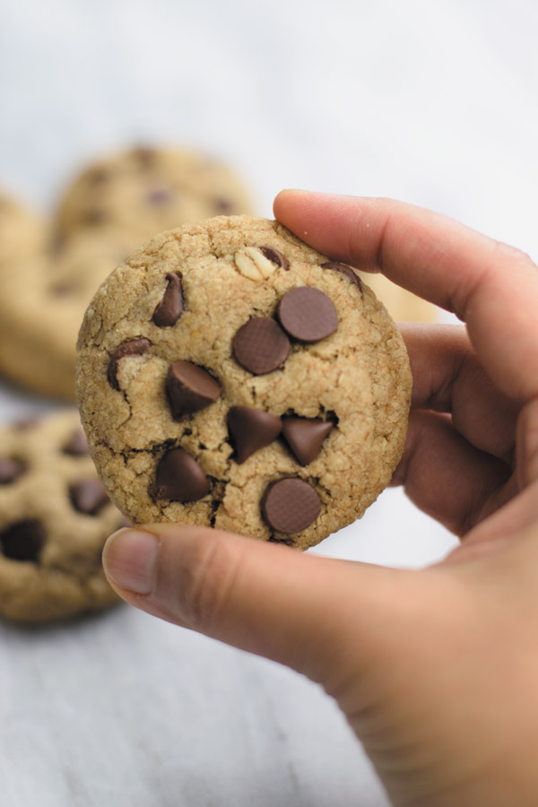

BEST CHEWY HEALTHY CHOCOLATE CHIP COOKIES
March 23, 2019
Little HEALTHIER take on everyone’s beloved chocolate chip cookies! Whole wheat flour, oats and half the fats make these the BEST CHEWY HEALTHY CHOCOLATE CHIP COOKIES! Same great taste!
BEST CHEWY HEALTHY CHOCOLATE CHIP COOKIES
Author: Priya Jariwala
Serves: 10 cookies
INGREDIENTS
Best Chewy Healthy Chocolate Chip Cookies -- ⅜ cup (39 gms) whole rolled oats
- ½ cup (82 gms) whole wheat flour
- ¼ tsp salt
- ¼ tsp baking soda
- 2 tbsp softened unsalted butter
- 2 tbsp coconut oil, melted
- 3 tbsp (38 gms) granulated white sugar
- 3 tbsp (35 gms) brown sugar
- ½ egg
- ½ tsp vanilla extract
- ½ cup semi sweet chocolate chips
INSTRUCTIONS
Best Chewy Healthy Chocolate Chip Cookies -- Grind oats to oat flour.
- Add oat flour, whole wheat flour, salt and baking soda in a bowl and stir.
- In another bowl, add softened butter and beat the butter until creamy and smooth. To it add coconut oil, white sugar, brown sugar, egg and vanilla extract. Mix until smooth batter is made.
- To it add the dry mix and mix until just mixed.
- Fold in ¼ cup chocolate chips.
- Cover the bowl with plastic wrap and then place in fridge for 1 hour to overnight.
- When ready to bake, let the cold cookie dough thaw for 15 minutes or so.
- Preheat the oven to 350F.
- Roll cookie dough into 9-10 round balls and place onto a parchment paper lined baking sheet.
- Bake for 11 minutes. Let it rest onto the counter and at this stage I add some chocolate chips onto the the just baked soft cookies.
- Once completely cool, store in airtight container.